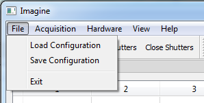
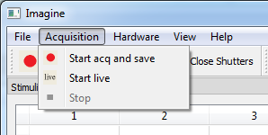
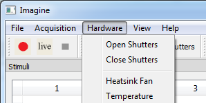
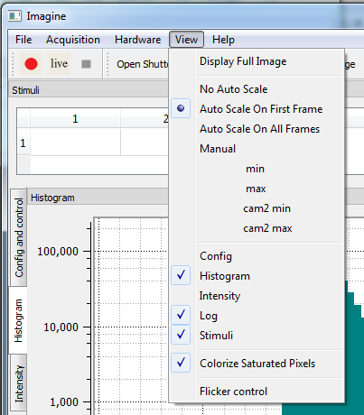

Main Menu
1. File menu

We can save a current configuration and load it later using this menu.
2. Acquisition menu

We can start aquisition or live displaying the images from the cameras.
3. Hardware menu

We can open and close a laser shutter of laser. "Heatsink Fan" and "Temperature" menus are not usable currently.
4. View menu

- Display Full Image : this menu make the camera ROI as full resion.
- No Auto Scale : does not apply auto scale to the intensity of the captured images in displaying them.
- Auto Scale On First Frame : applies auto scale to the first frame image of a stack. And following frames are scaled with the scale factor of the first frame of the stack which they are belonged.
- Auto Scale On All Frames : apllies auto scale to the every frame of the capture images.
- Manual : enables users to set the scale manually. Intensity from "min" value and "max" value will be scaled to 0 to 255. If we overlap the camera1 iamge with the camera2 iamge, "cam2 min" and "cam2 max" can be used to set the minimum and maximum intensity value of the camera2 image.
- Colorize Saturated Pixels : enables display to indicate the saturated pixel with some colors. Blue color pixels indicates pixels which have minus intensity value after scaling. Red is for pixels having intensity over 256.
- Flicker control : reduces the flicker caused by abnormal black frames between normal frames.